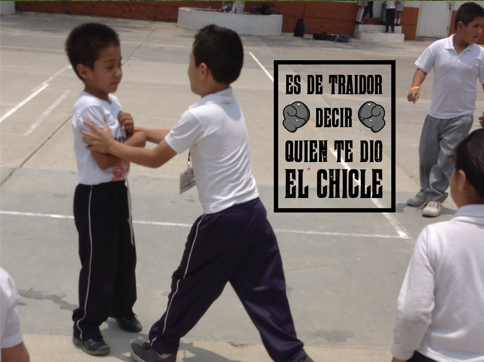

La goma de mascar se erige como uno de los productos más consolidados en el mundo con una derrama económica de decenas de millones de dólares
Cientos de círculos oscuros se aprecian en el suelo. Como una alfombra pegajosa se extienden a lo largo de las aceras, avenidas y caminos por los que se avanza; se suben por los postes y bardas y, como si tuvieran vida, dejan un recuerdo de su presencia al adherirse en las suelas de los zapatos de algunos transeúntes. Así suelen ser los chicles, la única golosina que se compra para desecharse casi en su totalidad, pero cuya producción sigue en crecimiento desde 2010.
El Instituto Nacional de Estadística, Geografía e Informática (Inegi) confirma el aumento de la elaboración y ganancias de la goma de mascar sin confitar, que contiene grandes cantidades de azúcares y es la más popular comercialmente. De 2010 a 2011, la producción aumentó en más de nueve mil toneladas, al haber pasado de 39 mil 87 a 48 mil 187.
Luego siguió en aumento. Para los primeros meses de 2012, el Inegi reportó el incremento del volumen de la producción de chicles, que fue de un poco menos de 17 mil toneladas, casi cinco mil toneladas más que el mismo periodo de 2011.
Una de las productoras más incipientes es la empresa alimentaria Kraft Foods, la segunda más grande en el mundo y la número uno de México en la producción de goma de mascar.
De origen inglés, Kraft Foods compró el corporativo estadounidense Cadbury, que fue el precursor de la venta del chicle en el planeta. Su creación corrió a cargo de Thomas Adams, en 1870, después de un encuentro con el ex multipresidente de México y fiel consumidor de goma genérica, Antonio López de Santa Anna.
140 años más tarde, en 2010, el mundo de las finanzas fue testigo de que los chiclets dejan mucho: la transacción empresarial entre Cadbury y Kraft fue de 19 mil millones de dólares.
Eduardo Rodríguez, coordinador para medios de comunicación de Kraft Foods México, informa que cada año se produce 92 mil toneladas de chicles en el país, donde el consumo promedio es el segundo más alto del mundo, sólo después de Estados Unidos.
Actualmente el conglomerado alimentario de Kraft Foods mantiene el dominio en la venta de la goma de mascar; sin embargo, existen empresas, como el Consorcio Chiclero, que producen y distribuyen —a través de la comercializadora Chicza— chicles biodegradables, gracias a una explotación sustentable de 1.3 millones de hectáreas de selva tropical.
El origen de la goma que se compra en las tiendas o supermercados y que danza y se aplasta en la boca de millones de mexicanos, se encuentra en el Manilkara Zapota, conocido así en el mundo científico. Un árbol milenario, único de Mesoamérica, característico del bosque tropical o selva, que se concentra en extensos territorios de Chiapas, Campeche, Quintana Roo y Yucatán.
El Instituto Nacional de Ecología reporta distintas fases de explotación en masa de la flora desde 1901, cuando comenzó la inversión extranjera en la industria chiclera. Durante este periodo, que abarcó hasta 1940, se apiñaron 10 millones de kilos de chicle, tan sólo de Campeche, que representaba 50 por ciento de la producción nacional.
El chicozapote se destaca por su contenido de carbohidratos, calcio y con un alto valor energético, que ahora fue opacado por la inmersión de glucosa y azúcares que suplen la utilización de la goma del árbol.
Los datos indican que el sector de la golosina pegajosa se mantendrá como uno de los ámbitos más remuneradores de la economía mexicana.
